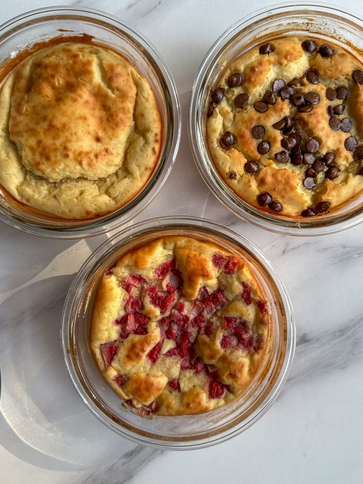

Baked Pancake Bowls

Servings: 4
Time Taken: 20 minutes
Ingredients:
- 1 Egg
- 50g Yogurt
- 70 ml Milk
- 35g Flour
Method:
- In a glass bowl, put an Egg, Yogurt, Milk and mix until combined.
- Add Flour and Sugar or sweentener if you prefer and mix.
- Bake at 180 degrees for 20 minutes.